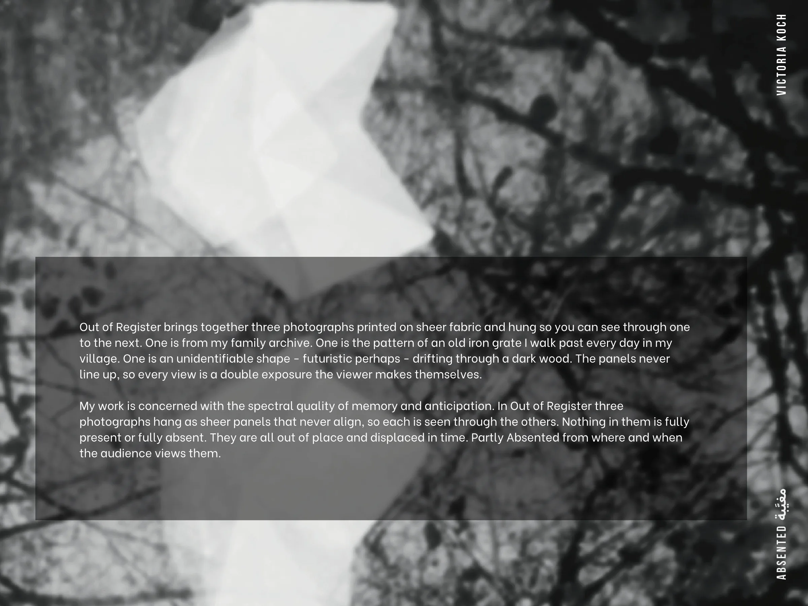

Out of Register brings together three photographs printed on sheer fabric and hung so you can see through one to the next. One is from my family archive. One is the pattern of an old iron grate I walk past every day in my village. One is an unidentifiable shape - futuristic perhaps - drifting through a dark wood. The panels never line up, so every view is a double exposure the viewer makes themselves.
My work is concerned with the spectral quality of memory and anticipation. In Out of Register three photographs hang as sheer panels that never align, so each is seen through the others. Nothing in them is fully present or fully absent. They are all out of place and displaced in time. Partly Absented from where and when the audience views them.
Victoria Koch
